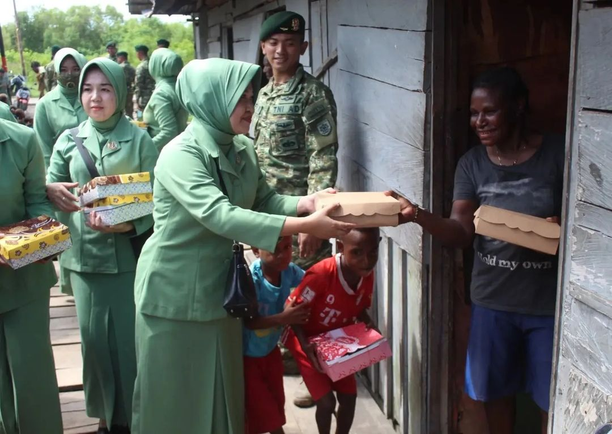

Penerapan Pancasila di Berbagai Lingkungan
Dalam Keluarga
- Menghormati anggota keluarga yang berbeda keyakinan
- Musyawarah menentukan kegiatan keluarga
- Bersikap adil kepada semua anak
- Gotong royong membersihkan rumah
- Saling membantu dalam kesulitan
Di Sekolah
- Toleransi antar siswa berbeda agama
- Pemilihan ketua kelas secara demokratis
- Kerja bakti membersihkan lingkungan sekolah
- Membantu teman yang kesulitan belajar
- Menghormati guru dan staf sekolah
Di Masyarakat
- Ikut serta dalam kerja bakti RT/RW
- Menghargai hasil musyawarah warga
- Bantu tetangga yang membutuhkan
- Menjaga kerukunan antarwarga
- Melapor jika melihat ketidakadilan

Penerapan per Sila Pancasila
Ketuhanan Yang Maha Esa
Contoh Penerapan:
- Menghormati teman yang sedang beribadah
- Tidak mengganggu perayaan agama lain
- Memberikan kesempatan beribadah
Kegiatan Nyata:
- Perayaan hari besar agama secara bersama
- Dialog antarumat beragama
- Bantuan untuk rumah ibadah yang membutuhkan
Kemanusiaan yang Adil dan Beradab
Contoh Penerapan:
- Membela teman yang di-bully
- Menolong korban bencana alam
- Bersikap sopan kepada semua orang
Kegiatan Nyata:
- Kampanye anti-diskriminasi
- Donasi untuk yang membutuhkan
- Program beasiswa untuk tidak mampu
Persatuan Indonesia
Contoh Penerapan:
- Menggunakan bahasa Indonesia yang baik
- Bangga menggunakan produk dalam negeri
- Menjaga kerukunan antar suku
Kegiatan Nyata:
- Festival budaya nasional
- Kegiatan 17-an di lingkungan
- Ekskul kesenian daerah di sekolah
Kerakyatan yang Dipimpin oleh Hikmat Kebijaksanaan
Contoh Penerapan:
- Menghargai hasil pemilihan umum
- Menyelesaikan masalah dengan musyawarah
- Memberi kesempatan semua pihak berbicara
Kegiatan Nyata:
- Pemilihan ketua kelas secara demokratis
- Rapat RT untuk pembangunan lingkungan
- Forum diskusi remaja
Keadilan Sosial bagi Seluruh Rakyat Indonesia
Contoh Penerapan:
- Membayar pajak tepat waktu
- Peduli terhadap kaum difabel
- Bersikap adil dalam bergaul
Kegiatan Nyata:
- Bantuan sembako untuk warga kurang mampu
- Program beasiswa untuk anak tidak mampu
- Pelatihan keterampilan untuk pengangguran

Studi Kasus Penerapan Pancasila
Kasus Positif
- Gotong royong membangun jembatan
- Warga berbeda agama menjaga tempat ibadah
- Sekolah mengadakan lomba kebhinekaan
Solusi Masalah
- Menyelesaikan konflik dengan musyawarah
- Menangani bullying dengan pendekatan Pancasila
- Mengatasi diskriminasi di lingkungan kerja